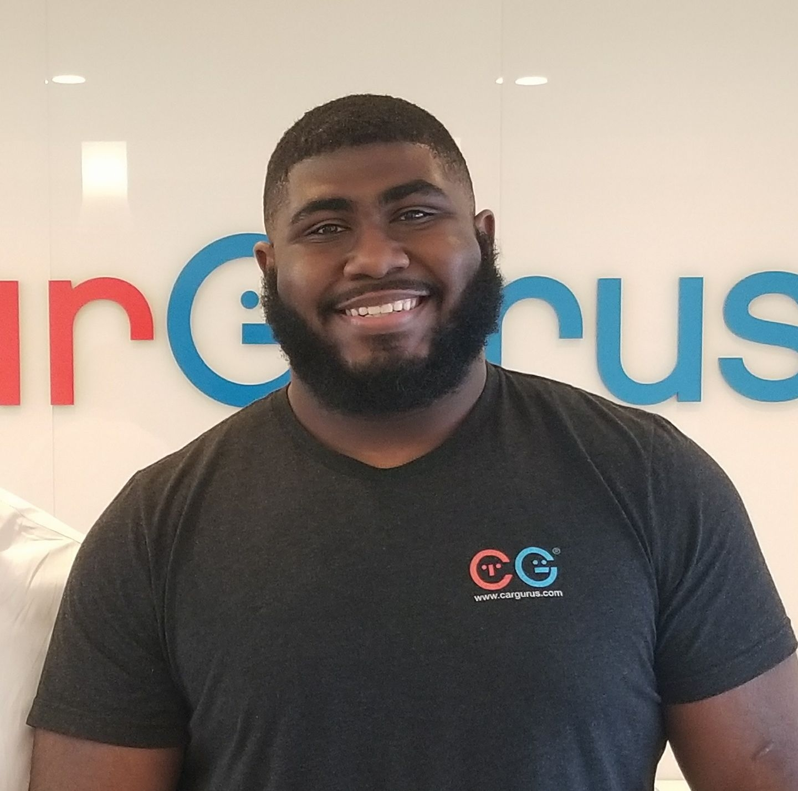

Current University student with a passion for coding and game design. Fluent in C++ and C#. My dream is to eventually start my own indie game company. Obviously I will need more experience, but I'll get there at some point.
I grew up on the Lower East side of New York City. I started coding during hichschool and from there I fell in love with it. I grew up playing games and my online communities are ones I still feel ties to today no matter what age I am. I can play a game once, but as long as I played it and added value to that community in any form, I could come back to it years later and feel just a part of it. That is why I love games and wish to make them myself. I believe that games can bring people together and foster a community closer than the ones around you at time.
 Home